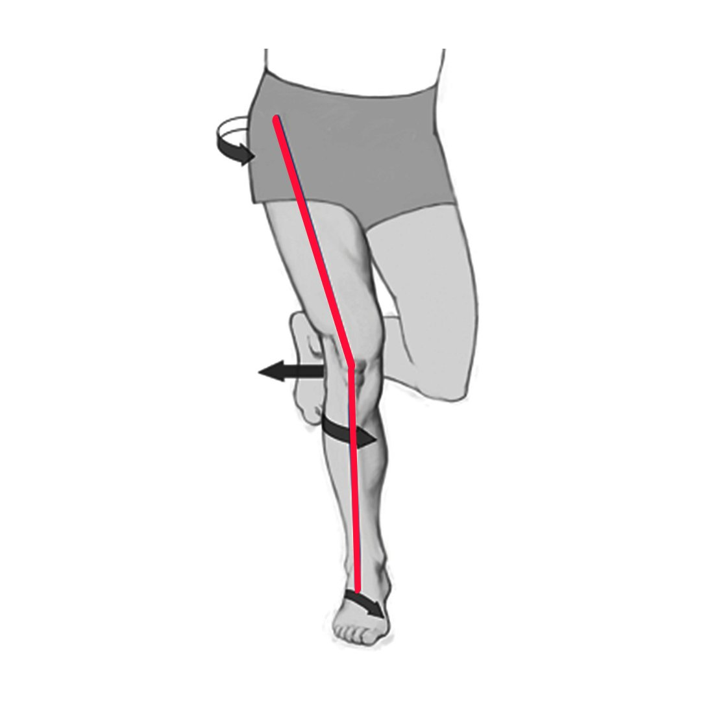

Knee pain is a common complaint that can greatly impact daily life and mobility. While it might seem counterintuitive, the source of knee pain can often be traced back to issues higher up in the body – specifically, incorrect hip rotation during the gait cycle. In this blog, we'll explore the intricate relationship between hip rotation, the gait cycle, and knee pain, shedding light on how these factors are interconnected and how they contribute to discomfort.
The Gait Cycle and Hip Rotation: The gait cycle is the sequence of movements that occur as we walk or run. It's a complex process that involves various joints and muscles working together to ensure smooth and efficient movement. One key element of the gait cycle is hip rotation – the twisting motion of the hips as the leg swings forward and backward.
The Hip-Knee Connection: The hips and knees are closely linked through a biomechanical chain. When we walk or run, the movement of the hips directly affects the alignment and function of the knees. Proper hip rotation is crucial for maintaining optimal alignment of the entire lower extremity, from the hips down to the feet. When the hips rotate correctly, they help distribute forces evenly, reducing the stress placed on the knees.

The Impact of Incorrect Hip Rotation: When hip rotation is compromised or not functioning optimally, a chain reaction is set in motion. Incorrect hip rotation can lead to:
-
Knee Misalignment: Improper hip rotation can result in misalignment of the knees. When the hips don't rotate as they should during the gait cycle, it can lead to increased stress on the knee joint, potentially causing pain and discomfort.
-
Increased Shear Forces: Incorrect hip rotation can create excessive shear forces within the knee joint. These forces can contribute to wear and tear on the joint surfaces, leading to inflammation, pain, and potential long-term damage.
-
Tracking Issues: Hip rotation plays a role in tracking the patella (kneecap) within the femoral groove. When hip rotation is off, it can lead to patellar tracking issues, causing pain and instability in the knee.
-
Muscle Imbalances: Hip rotation imbalances can lead to compensatory movements and muscle imbalances in the surrounding muscles. This can further contribute to knee pain and discomfort.

Hip rotating away from leg in front = knee overcompensation (valgus)
Addressing Hip Rotation for Knee Pain Relief:
Correcting hip rotation issues is essential for alleviating knee pain.
This involves:
-
Gait Analysis: Identifying abnormalities in hip rotation through gait analysis is a crucial first step. By understanding how the hips are moving during the gait cycle, practitioners can pinpoint the root causes of knee pain.
-
Functional Patterns Approach: Functional Patterns methodology focuses on addressing movement imbalances and enhancing functional stability. Through targeted exercises that promote proper hip rotation and overall alignment, individuals can work to retrain their movement patterns and alleviate knee pain.
-
Strengthening Hip Muscles: Strengthening the muscles involved in hip rotation is vital. By improving muscle strength and coordination, individuals can enhance their ability to rotate the hips correctly during the gait cycle. However, your average hip strengthening exercises are not going to work here. You need to address, at a deeper lever, what muscles are affecting your sequence of gait. You also need to take into account how these muscles interplay with the entire system.
-
Proprioception Training: Proprioception-based exercises help individuals develop a heightened sense of how their hips are moving. This awareness allows for conscious adjustments during the gait cycle, reducing the risk of improper hip rotation.
The relationship between hip rotation, the gait cycle, and knee pain is a prime example of how interconnected the body's biomechanics are. Incorrect hip rotation can have far-reaching effects, impacting the alignment, stability, and function of the knees. By addressing hip rotation issues through gait analysis and Functional Patterns methodology, individuals can take proactive steps to alleviate knee pain, enhance movement patterns, and restore overall comfort and mobility.